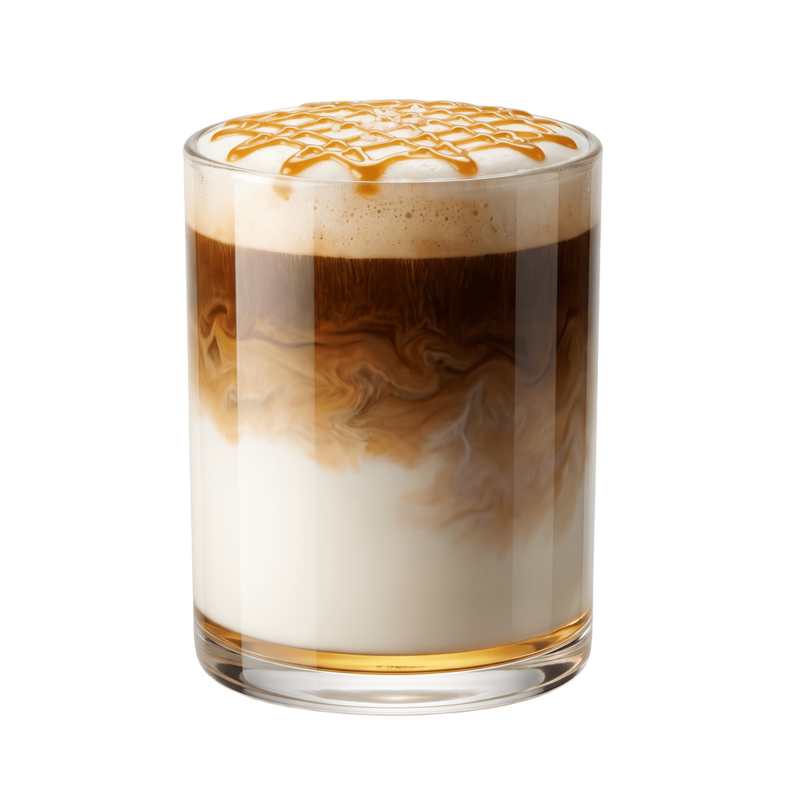

Colheita Seletiva
Apenas cerejas em maturação plena 'sangue de boi'. Colheita manual em encostas íngremes da Serra da Mantiqueira com secagem em terreiros suspensos.
100% Arábica
Made for the ones who taste the difference
01. ORIGEM TRANSPARENTE
Negociamos diretamente com cooperativas familiares da Mantiqueira de Minas e Alta Mogiana, pagando até 60% acima do preço de mercado commodity.
02. TORRA DE PERFIL ÚNICO
Cada lote de 12kg possui curvas térmicas mapeadas por sensores óticos. Destacamos as notas florais, acidez málica e cremosidade densa natural.
03. EXTRAÇÃO SEM ATALHOS
Água mineral com pH regulado e tds controlado a 130ppm. Moedores com lâminas planas blindadas de 83mm para granulometria uniforme.
Bebidas concebidas pela nossa equipe de baristas campeões. Cada receita explora camadas sensoriais do espresso à emulsão cremosa artesanal.
Camadas harmoniosas de xarope puro de baunilha, leite vaporizado aveludado, duplo shot de espresso Bourbon Amarelo manchando o leite e finalização artística em grade com calda dourada artesanal de caramelo com toque de flor de sal.

Nenhum detalhe é terceirizado. Acompanhamos a trajetória completa da cereja do café em quatro etapas intransigentes de pureza.
Apenas cerejas em maturação plena 'sangue de boi'. Colheita manual em encostas íngremes da Serra da Mantiqueira com secagem em terreiros suspensos.
Torrador de tambor em ferro fundido. Desenvolvimento médio-claro para preservar a acidez fosfórica e evitar notas carbonizadas.
Moinhos de dose única com retenção zero. Distribuição de partículas bimodal perfeita, pesadas digitalmente com precisão de 0,05g.
Pressão estável por saturação de caldeiras duplas saturadas. O resultado é crema viscosa cor de avelã com brilho espelhado persistente.
“O Macchiato de Caramelo da casa é uma aula de proporção. O caramelo artesanal não rouba a cena do espresso Bourbon, apenas envolve o leite aveludado com doçura e equilíbrio cirúrgicos.”
“A consistência da torra semana após semana é o que separa uma cafeteria comum de um templo de grãos de especialidade. COFFEE entrega o melhor espresso da capital.”
“Ambiente sem barulho ensurdecedor de liquidificador, playlist de jazz pensada e uma equipe que realmente sabe explicar qual é a safra que você está bebendo.”
Rua dos Pinheiros, 842 — Pinheiros
São Paulo — SP, 05422-001